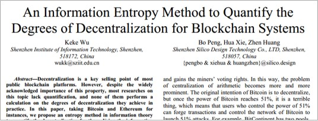
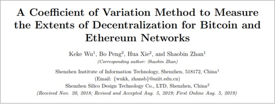

{% extends 'layout.html' %}
{% block main %}
Published papers (31 papers, including 4 SCI papers, 22 EI papers, 4 Chinese core papers)
First author:
-
Keke Wu , “Flexible Parallel Computing for Elliptic Curve Scalar Multiplication with Resistance against Simple Side-Channel Attacks”, Journal of Computers (Taiwan), Vol. 28, No. 6, December, 2017, pp. 64-78. ISSN: 1991 -1599, doi:10.3966/199115992017122806006, Computer Society of the Republic of China. (EI Journal )
-
Keke Wu , Huiyun Li, Dingju Zhu, “Fast and scalable parallel processing of scalar multiplication in elliptic curve cryptosystems”, Security and Communication Networks, Volume.5, Issue 6, pp.648-657, June 2012, Wiley-Blackwell, ISSN : 1939-0114. (SCI / EI)
-
Keke Wu , Huiyun Li, Dingju Zhu, Fengqi Yu, “Efficient solution to secure ECC against side-channel attacks”, Chinese Journal of Electronics, Volume 20, Issue 3, 2011, pp. 471-475, Technology Exchange Limited Hong Kong, ISSN: 1022-4653. (SCI)
-
Keke Wu , Huiyun Li, Xucheng Yin, Guoqing Xu, “Elliptic Curve Isogenies to Resist Differential Side-Channel Analysis Attacks”, The 7th International Conference on Computational Intelligence and Security (CIS2011), December 3-4, 2011, Sanya, China, IEEE Computer Society Press. (EI/ISTP)
-
Keke Wu , Li Huiyun, Yan Lijun, "An ECCMapping Model for Defense Differential Power Analysis", Computer Engineering,2017, No.10,43(10),p.115-119. (Peking University Chinese Core Journal, Chinese Academy of SciencesCSCDCore Journal)
-
Keke Wu , Gao Yuefang, Yan Lijun, "An elliptic curve isomorphism method to resist differential side-channel analysis", "Computer and Modernization", 2017, No.10,266(10),p.105-110. (China Science and Technology Core)
-
Keke Wu , Huang Guowei, Kong Lingjing, "A Flexible Parallelization Method for Elliptic Curve Cryptography", Computer and Modernization, 2018, No.2,270(2),p.71-75. (China Science and Technology Core)
-
Keke Wu , Li Huiyun, Yu Minazaki, "An efficient elliptic curve scalar multiplication method to defend against side-channel attacks", "High-tech Communications", 2011,Vol.215, pp. 495-502 , National Issue: CN 11-2770 /N, ISSN: 1002-0470. (EI /Chinese Core)
-
Keke Wu , Huiyun Li, Fengqi Yu, “Retrieving Lost Efficiency of Scalar Multiplications for Resisting against Side-Channel Attacks”, Journal of Computers, Volume 5, Issue 12, 2010, pp. 1878-1884, ISSN: 1796-203X, Academy Publisher. (EI)
-
Keke Wu , Li Huiyun, Yu Minazaki, "Correlation Power Analysis ( CPA) Attacks on Synchronous Stream Cipher Devices", "High-Tech Communications",2009,Vol1911,pp. 1142–1147 , domestic issue: CN 11-2770/N, ISSN: 1002-0470. (EI /Chinese Core)
-
Keke Wu , Dawei Li, Huiyun Li, Tingding Chen, Fengqi Yu, "Partitioned Computation to Accelerate Scalar Multiplication for Elliptic Curve Cryptosystems", The Fifteenth International Conference on Parallel and Distributed Systems (ICPADS 2009), 2009.12.09- 12.11, IEEE Computer Society Press. (EI)
-
Keke Wu , Huiyun Li, Tingding Chen, Fengqi Yu, “Electromagnetic Analysis on Elliptic Curve Cryptosystems: Measures and Counter-Measures for Smart Cards”, 2009 International Symposium on Intelligent Information Technology Application (IITA 2009), IEEE Computer Society Press. (EI / ISTP)
-
Keke Wu , Huiyun Li, Tingding Chen, Fengqi Yu, “Simple Power Analysis on Elliptic Curve Cryptosystems and Countermeasures: Practical Work”, The Second International Symposium on Electronic Commerce and Security (ISECS 2009), IEEE Computer Society Press. (EI)
-
Keke Wu , Huiyun Li, Bo Peng, Fengqi Yu, “Correlation Power Analysis Attack against Synchronous Stream Cipher”, The 9th International Conference for Young Computer Scientists (ICYCS 2008), IEEE Computer Society Press. (EI / ISTP)
-
Keke Wu , Zhang Ping'an, Yan Xia, "The Game of Elliptic Curve Cryptographic Chip Security and Efficiency", "Journal of Shenzhen Institute of Information Technology", 2014,Vol123,pp.18-23.
The second author:
-
Cheng Dongsheng, Keke Wu , Liu Zhiyong, "Image Encryption Algorithm Based on Chaos Pseudo-Random Matching Shift", "Information Communication", pp. 7-9No.8,2016.
-
Huiyun Li, Keke Wu , Fengqi Yu, “Enhanced Correlation Power Analysis Attack against Trusted Systems”, Security and Communication Networks; Volume.4, Issue 1, 2011, pp. 3–10, Wiley-Blackwell . (SCI / EI)
-
Zhang Yiwei, Keke Wu , Chen Jiapei, "A Cryptographic Chip Memory Bus Against Intrusive Analysis", Small Microcomputer Systems, Vol. 33, No.4,April2012,pp. 785-788, CN:21-1106/TP, ISSN: 1000-1220. (Chinese core)
-
Huiyun Li, Keke Wu , Guoqing Xu, Hai Yuan and Peng Luo, “Simple Power Analysis Attacks Using Chosen Message against ECC Hardware Implementations”, World Congress on Internet Security (WorldCIS-2011), Feb 21-23, 2011, UK, IEEE Computer Society Press. (EI / ISTP)
-
Huiyun Li, Keke Wu , Fengqi Yu, Hai Yuan, “ Evaluation Metrics of Physical Non-Invasive Security”, Fourth Workshop in Information Security Theory and Practice (WISTP 2010): Security and Privacy of Pervasive Systems and Smart Devices , April 13-14 , Passau, Germany, Springer: LNCS (EI)
-
Huiyun Li, Keke Wu , Fengqi Yu, “ Enhanced Correlation Power Analysis Attack on Smart Card”, The 9th International Conference for Young Computer Scientists (ICYCS 2008), IEEE Computer Society Press. (EI / ISTP)
Third author:
-
Lingjing Kong, Guowei Huang, Keke Wu , “ Identification of Abnormal Network Traffic Using Support Vector Machine”, International Conference on Parallel and Distributed Computing, Applications and Technologies (PDCAT 2017), Taipei Taiwan, December 18-20, 2017. (EI)
-
Guowei Huang, Lingjing Kong, Keke Wu , Zhi Chen, “ A Bandwidth Allocation Policy for Helpers in Cloud-assisted P2PVideo-on-demand Systems”, 2017 Fifth International Conference on Advanced Cloud and Big Data (CBD 2017), August 13-16 , Shanghai, China. (EI)
-
Guowei Huang, Lingjing Kong, Keke Wu , Zhi Chen, “ A Service Scheduling Policy for Improving Playback Quality of Mesh-based P2P VoD Systems”, The 16th IEEE International Conference on Ubiquitous Computing and Communications, December 12-15, 2017. (EI )
-
Guowei Huang, Lingjing Kong, Keke Wu , “ An Incentive scheme based on Bitrate Adaptation for Cloud-Assisted P2P Video-on-demand Streaming Systems”, the 3rd IEEE International Conference on Cloud Computing and Big Data Analysis (ICCCBDA 2018), April 20 -22, 2018, Chengdu, China, ICCCBDA 2018 Conference Proceedings. (EI)
-
Huiyun Li, Tingding Chen, Keke Wu , Fengqi Yu, “Quantitative Evaluation of Side-channel Security”, 2009 Asia-Pacific Conference on Information Processing (APCIP 2009), IEEE Computer Society Press. (EI / ISTP)
-
Huiyun Li, Tingding Chen, Keke Wu , Fengqi Yu, “Quantitative Evaluation of Side-channel Security for Elliptic Curve Cryptosystems”, 3rd International Conference on Anti-counterfeiting, Security, and Identification in Communication 2009 (ICASID 2009), IEEE Computer Society Press . (EI / ISTP)
-
Tingding Chen, Huiyun Li, Keke Wu , Fengqi Yu, “Countermeasure of ECC against Side-channel Attacks: Balanced Point Addition and Point Doubling Operation Procedure”, 2009 Asia-Pacific Conference on Information Processing (APCIP 2009), IEEE Computer Society Press. (EI / ISTP)
-
Tingding Chen, Huiyun Li, Keke Wu , Fengqi Yu, “Evaluation Criterion of Side-Channel Countermeasures for Elliptic Curve Cryptography Devices”, 2009 International Conference on Computer and Communications Security (ICCCS 2009), IEEE Computer Society Press. (EI / ISTP)
Fourth author:
-
Ying Zhou, Jiahai Wang, Ziyan Wu, Keke Wu , “A multi-objective tabu search algorithm based on decomposition for multi-objective unconstrained binary quadratic programming problem”, Knowledge-Based Systems, Volume 141, 1 February 2018, Pages 18–30 . (SCI)
-
Jeng-Shyang Pan, Lijun Yan, Xingming Liu, Keke Wu , “Directional Derivative and Feature Line Based Subspace Learning Algorithm for Classification”, Journal of Information Hiding and Multimedia Signal Processing, Volume 7, Number 6, November 2016, ISSN 2073-4212 , pp. 1337-1344. (EI)


{% endblock main %}